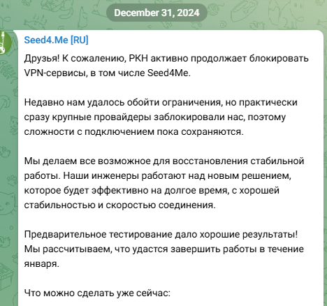

| Ник | Пост | Дата |
|---|---|---|
| naykaminka(Sergey) | Установлен данный сервис и я изредка наблюдаю за борьбой ребят против РКН Раньше он брыкался пару дней и восстанавливался, сейчас лежит уже почти месяц.  Может у кого-то есть информация почему от него так легко избавились, там какие-то примитивные технологии используются ? | 2025-01-17T15:12:58.509Z |
| uikono(uikono) | полагаю есть некий список впн-сервисов за которым у ркн идет усиленный контроль, ну и соответственно идет сбор ip/какой-либо еще тех. информации, которые используются данными сервисами, а затем эти айпи отправляются в блок. у меня вот например протокол OpenVPN спокойно работает, но что это дает если с сервером не будет соединения? ничего. | 2025-01-17T16:30:49.929Z |
| TikTak(TikTak) |
А что там за протокол у них вообще, Обфусцирован? | 2025-01-17T17:18:51.674Z |
| TikTak(TikTak) |
Все публичные коммерческие гуи для впн, где одну кнопку нажать и всё работает- по айпи давно перебанили вроде | 2025-01-17T17:24:09.499Z |
| sorrebanana | смотря какой провайдер. у меня небольшой локальный провайдер и у него работают практически все стремные бесплатные впны/все протоколы, на мобильном мтс чуть хуже, но тоже особо ничего не блокнуто | 2025-01-17T17:28:48.198Z |
| TikTak(TikTak) | Разное слышу в этом плане, кто то мне тут писал, что обычный опен-впн заграницу со многих провайдеров вообще неалё, например | 2025-01-17T17:36:32.253Z |
| dartraiden(Alexander Gavrilov) | Что там в их приложении - не знаю, но для ручной настройки предлагают PPTP и L2TP/IPSec | 2025-01-17T18:16:30.158Z |
| TikTak(TikTak) | Уу, тогда удивительно что он так долго вообще проработал | 2025-01-17T18:46:27.999Z |
| 0ka(0ka) | Pptp и l2tp это туннели второго уровня osi, они не могут работать без белого ip на клиенте, в бесплатные впн на андроид их никто пихать не будет т.к. у большинства тупо работать не будет т.к. белого ip нет | 2025-01-17T18:58:03.068Z |
| BBS | L2TP без белого IP работает, по крайней мере у МГТС. | 2025-01-17T19:03:11.103Z |
| 0ka(0ka) | Возможно у мгтс есть l2tp nat passthrough, ну или же в l2tp есть режим работы через udp, я в нем мало шарю, поэтому хз | 2025-01-17T19:04:47.228Z |
| 0ka(0ka) |
Там авторизация через tcp, заблокирована ркном, обходится через zapret | 2025-01-17T19:05:52.732Z |
| BBS | Да, протокол называется NAT-T, использует UDP для прохождения NAT. PPTP не умеет через NAT, поэтому zapret не поможет. Впрочем, протокол небезопасный, поэтому нафиг его. | 2025-01-17T19:09:38.749Z |
| 0ka(0ka) |
Вообще-то это NAT должен уметь в PPTP, а не наоборот, и многие NAT умеют гонять PPTP (даже в роутере тплинк 2013г есть опция). Pptp авторизуется через tcp и именно в этот момент блокируется тспу | 2025-01-17T19:14:19.799Z |
| BBS | GRE может быть и может с костылями пройти через NAT, но на один внешний IP возможно только одно GRE соединение к одному серверу, и МГТС его блокировал ещё до 22 года. | 2025-01-17T19:23:52.858Z |
| denium | Ну, в былые времена спокойно пользовался PPTP на мобильном интернете. | 2025-01-17T20:24:50.461Z |